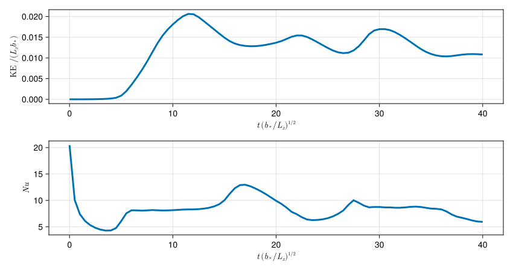

Horizontal convection example
In "horizontal convection", a non-uniform buoyancy is imposed on top of an initially resting fluid.
This example demonstrates:
- How to use computed
Fields for output. - How to post-process saved output using
FieldTimeSeries.
Install dependencies
First let's make sure we have all required packages installed.
using Pkg
pkg"add Oceananigans, CairoMakie"Horizontal convection
We consider two-dimensional horizontal convection of an incompressible flow $\boldsymbol{u} = (u, w)$ on the $(x, z)$-plane ($-L_x/2 \le x \le L_x/2$ and $-H \le z \le 0$). The flow evolves under the effect of gravity. The only forcing on the fluid comes from a prescribed, non-uniform buoyancy at the top-surface of the domain.
We start by importing Oceananigans and Printf.
using Oceananigans
using PrintfThe grid
H = 1 # vertical domain extent
Lx = 2H # horizontal domain extent
Nx, Nz = 128, 64 # horizontal, vertical resolution
grid = RectilinearGrid(size = (Nx, Nz),
x = (-Lx/2, Lx/2),
z = (-H, 0),
topology = (Bounded, Flat, Bounded))128×1×64 RectilinearGrid{Float64, Bounded, Flat, Bounded} on CPU with 3×0×3 halo
├── Bounded x ∈ [-1.0, 1.0] regularly spaced with Δx=0.015625
├── Flat y
└── Bounded z ∈ [-1.0, 0.0] regularly spaced with Δz=0.015625Boundary conditions
At the surface, the imposed buoyancy is
\[b(x, z = 0, t) = - b_* \cos (2 \pi x / L_x) \, ,\]
while zero-flux boundary conditions are imposed on all other boundaries. We use free-slip boundary conditions on $u$ and $w$ everywhere.
b★ = 1
@inline bˢ(x, t, p) = - p.b★ * cos(2π * x / p.Lx)
b_bcs = FieldBoundaryConditions(top = ValueBoundaryCondition(bˢ, parameters=(; b★, Lx)))Oceananigans.FieldBoundaryConditions, with boundary conditions
├── west: DefaultBoundaryCondition (FluxBoundaryCondition: Nothing)
├── east: DefaultBoundaryCondition (FluxBoundaryCondition: Nothing)
├── south: DefaultBoundaryCondition (FluxBoundaryCondition: Nothing)
├── north: DefaultBoundaryCondition (FluxBoundaryCondition: Nothing)
├── bottom: DefaultBoundaryCondition (FluxBoundaryCondition: Nothing)
├── top: ValueBoundaryCondition: ContinuousBoundaryFunction bˢ at (Nothing, Nothing, Nothing)
└── immersed: DefaultBoundaryCondition (FluxBoundaryCondition: Nothing)Non-dimensional control parameters and Turbulence closure
The problem is characterized by three non-dimensional parameters. The first is the domain's aspect ratio, $L_x / H$ and the other two are the Rayleigh ($Ra$) and Prandtl ($Pr$) numbers:
\[Ra = \frac{b_* L_x^3}{\nu \kappa} \, , \quad \text{and}\, \quad Pr = \frac{\nu}{\kappa} \, .\]
The Prandtl number expresses the ratio of momentum over heat diffusion; the Rayleigh number is a measure of the relative importance of gravity over viscosity in the momentum equation.
For a domain with a given extent, the nondimensional values of $Ra$ and $Pr$ uniquely determine the viscosity and diffusivity, i.e.,
\[\nu = \sqrt{\frac{Pr b_* L_x^3}{Ra}} \quad \text{and} \quad \kappa = \sqrt{\frac{b_* L_x^3}{Pr Ra}} \, .\]
We use isotropic viscosity and diffusivities, ν and κ whose values are obtain from the prescribed $Ra$ and $Pr$ numbers. Here, we use $Pr = 1$ and $Ra = 10^8$:
Pr = 1 # Prandtl number
Ra = 1e8 # Rayleigh number
ν = sqrt(Pr * b★ * Lx^3 / Ra) # Laplacian viscosity
κ = ν * Pr # Laplacian diffusivityModel instantiation
We instantiate the model with the fifth-order WENO advection scheme, a 3rd order Runge-Kutta time-stepping scheme, and a BuoyancyTracer.
model = NonhydrostaticModel(; grid,
advection = WENO(),
timestepper = :RungeKutta3,
tracers = :b,
buoyancy = BuoyancyTracer(),
closure = ScalarDiffusivity(; ν, κ),
boundary_conditions = (; b=b_bcs))NonhydrostaticModel{CPU, RectilinearGrid}(time = 0 seconds, iteration = 0)
├── grid: 128×1×64 RectilinearGrid{Float64, Bounded, Flat, Bounded} on CPU with 3×0×3 halo
├── timestepper: RungeKutta3TimeStepper
├── advection scheme: FluxFormAdvection{3, Float64, WENO{3, Float64, Nothing, Nothing, Nothing, Nothing, WENO{2, Float64, Nothing, Nothing, Nothing, Nothing, UpwindBiased{1, Float64, Nothing, Nothing, Nothing, Nothing, Centered{1, Float64, Nothing, Nothing, Nothing, Nothing}}, Centered{1, Float64, Nothing, Nothing, Nothing, Nothing}}, Centered{2, Float64, Nothing, Nothing, Nothing, Centered{1, Float64, Nothing, Nothing, Nothing, Nothing}}}, UpwindBiased{1, Float64, Nothing, Nothing, Nothing, Nothing, Centered{1, Float64, Nothing, Nothing, Nothing, Nothing}}, WENO{3, Float64, Nothing, Nothing, Nothing, Nothing, WENO{2, Float64, Nothing, Nothing, Nothing, Nothing, UpwindBiased{1, Float64, Nothing, Nothing, Nothing, Nothing, Centered{1, Float64, Nothing, Nothing, Nothing, Nothing}}, Centered{1, Float64, Nothing, Nothing, Nothing, Nothing}}, Centered{2, Float64, Nothing, Nothing, Nothing, Centered{1, Float64, Nothing, Nothing, Nothing, Nothing}}}}
├── tracers: b
├── closure: ScalarDiffusivity{ExplicitTimeDiscretization}(ν=0.000282843, κ=(b=0.000282843,))
├── buoyancy: BuoyancyTracer with ĝ = NegativeZDirection()
└── coriolis: NothingSimulation set-up
We set up a simulation that runs up to $t = 40$ with a JLD2OutputWriter that saves the flow speed, $\sqrt{u^2 + w^2}$, the buoyancy, $b$, and the vorticity, $\partial_z u - \partial_x w$.
simulation = Simulation(model, Δt=1e-2, stop_time=40.0)Simulation of NonhydrostaticModel{CPU, RectilinearGrid}(time = 0 seconds, iteration = 0)
├── Next time step: 10 ms
├── Elapsed wall time: 0 seconds
├── Wall time per iteration: NaN days
├── Stop time: 40 seconds
├── Stop iteration : Inf
├── Wall time limit: Inf
├── Callbacks: OrderedDict with 4 entries:
│ ├── stop_time_exceeded => Callback of stop_time_exceeded on IterationInterval(1)
│ ├── stop_iteration_exceeded => Callback of stop_iteration_exceeded on IterationInterval(1)
│ ├── wall_time_limit_exceeded => Callback of wall_time_limit_exceeded on IterationInterval(1)
│ └── nan_checker => Callback of NaNChecker for u on IterationInterval(100)
├── Output writers: OrderedDict with no entries
└── Diagnostics: OrderedDict with no entriesThe TimeStepWizard
The TimeStepWizard manages the time-step adaptively, keeping the Courant-Freidrichs-Lewy (CFL) number close to 0.7.
conjure_time_step_wizard!(simulation, IterationInterval(50), cfl=0.7, max_Δt=1e-1)A progress messenger
We write a function that prints out a helpful progress message while the simulation runs.
progress(sim) = @printf("Iter: % 6d, sim time: % 1.3f, wall time: % 10s, Δt: % 1.4f, advective CFL: %.2e, diffusive CFL: %.2e\n",
iteration(sim), time(sim), prettytime(sim.run_wall_time),
sim.Δt, AdvectiveCFL(sim.Δt)(sim.model), DiffusiveCFL(sim.Δt)(sim.model))
simulation.callbacks[:progress] = Callback(progress, IterationInterval(50))Callback of progress on IterationInterval(50)Output
We use computed Fields to diagnose and output the total flow speed, the vorticity, $\zeta$, and the buoyancy, $b$. Note that computed Fields take "AbstractOperations" on Fields as input:
u, v, w = model.velocities # unpack velocity `Field`s
b = model.tracers.b # unpack buoyancy `Field`
# total flow speed
s = @at (Center, Center, Center) sqrt(u^2 + w^2)
# y-component of vorticity
ζ = ∂z(u) - ∂x(w)We create a JLD2OutputWriter that saves the speed, and the vorticity. Because we want to post-process buoyancy and compute the buoyancy variance dissipation (which is proportional to $|\boldsymbol{\nabla} b|^2$) we use the with_halos = true. This way, the halos for the fields are saved and thus when we load them as fields they will come with the proper boundary conditions.
We then add the JLD2OutputWriter to the simulation.
saved_output_filename = "horizontal_convection.jld2"
simulation.output_writers[:fields] = JLD2OutputWriter(model, (; s, b, ζ),
schedule = TimeInterval(0.5),
filename = saved_output_filename,
with_halos = true,
overwrite_existing = true)Ready to press the big red button:
run!(simulation)[ Info: Initializing simulation...
Iter: 0, sim time: 0.000, wall time: 0 seconds, Δt: 0.0110, advective CFL: 0.00e+00, diffusive CFL: 1.27e-02
[ Info: ... simulation initialization complete (20.443 seconds)
[ Info: Executing initial time step...
[ Info: ... initial time step complete (13.727 seconds).
Iter: 50, sim time: 0.544, wall time: 35.185 seconds, Δt: 0.0121, advective CFL: 4.38e-03, diffusive CFL: 1.40e-02
Iter: 100, sim time: 1.145, wall time: 36.367 seconds, Δt: 0.0133, advective CFL: 1.66e-02, diffusive CFL: 1.54e-02
Iter: 150, sim time: 1.806, wall time: 37.152 seconds, Δt: 0.0146, advective CFL: 3.74e-02, diffusive CFL: 1.70e-02
Iter: 200, sim time: 2.500, wall time: 37.761 seconds, Δt: 0.0161, advective CFL: 6.80e-02, diffusive CFL: 1.87e-02
Iter: 250, sim time: 3.290, wall time: 38.428 seconds, Δt: 0.0177, advective CFL: 1.16e-01, diffusive CFL: 2.05e-02
Iter: 300, sim time: 4.159, wall time: 39.150 seconds, Δt: 0.0195, advective CFL: 2.06e-01, diffusive CFL: 2.26e-02
Iter: 350, sim time: 5.117, wall time: 39.902 seconds, Δt: 0.0214, advective CFL: 5.91e-01, diffusive CFL: 2.48e-02
Iter: 400, sim time: 6.171, wall time: 40.640 seconds, Δt: 0.0164, advective CFL: 7.00e-01, diffusive CFL: 1.90e-02
Iter: 450, sim time: 6.976, wall time: 41.379 seconds, Δt: 0.0159, advective CFL: 7.00e-01, diffusive CFL: 1.84e-02
Iter: 500, sim time: 7.755, wall time: 42.116 seconds, Δt: 0.0155, advective CFL: 7.00e-01, diffusive CFL: 1.80e-02
Iter: 550, sim time: 8.516, wall time: 42.745 seconds, Δt: 0.0153, advective CFL: 7.00e-01, diffusive CFL: 1.77e-02
Iter: 600, sim time: 9.275, wall time: 43.329 seconds, Δt: 0.0165, advective CFL: 7.00e-01, diffusive CFL: 1.91e-02
Iter: 650, sim time: 10.082, wall time: 43.946 seconds, Δt: 0.0155, advective CFL: 7.00e-01, diffusive CFL: 1.80e-02
Iter: 700, sim time: 10.857, wall time: 44.638 seconds, Δt: 0.0159, advective CFL: 7.00e-01, diffusive CFL: 1.84e-02
Iter: 750, sim time: 11.595, wall time: 45.260 seconds, Δt: 0.0173, advective CFL: 7.00e-01, diffusive CFL: 2.01e-02
Iter: 800, sim time: 12.450, wall time: 45.848 seconds, Δt: 0.0179, advective CFL: 7.00e-01, diffusive CFL: 2.07e-02
Iter: 850, sim time: 13.322, wall time: 46.477 seconds, Δt: 0.0179, advective CFL: 7.00e-01, diffusive CFL: 2.08e-02
Iter: 900, sim time: 14.215, wall time: 47.157 seconds, Δt: 0.0183, advective CFL: 7.00e-01, diffusive CFL: 2.11e-02
Iter: 950, sim time: 15.110, wall time: 47.726 seconds, Δt: 0.0197, advective CFL: 7.00e-01, diffusive CFL: 2.28e-02
Iter: 1000, sim time: 16.079, wall time: 48.401 seconds, Δt: 0.0197, advective CFL: 7.00e-01, diffusive CFL: 2.28e-02
Iter: 1050, sim time: 17.039, wall time: 49.045 seconds, Δt: 0.0197, advective CFL: 7.00e-01, diffusive CFL: 2.28e-02
Iter: 1100, sim time: 17.992, wall time: 49.667 seconds, Δt: 0.0201, advective CFL: 7.00e-01, diffusive CFL: 2.32e-02
Iter: 1150, sim time: 18.981, wall time: 50.334 seconds, Δt: 0.0208, advective CFL: 7.00e-01, diffusive CFL: 2.41e-02
Iter: 1200, sim time: 20.021, wall time: 51.058 seconds, Δt: 0.0219, advective CFL: 7.00e-01, diffusive CFL: 2.53e-02
Iter: 1250, sim time: 21.109, wall time: 51.800 seconds, Δt: 0.0219, advective CFL: 7.00e-01, diffusive CFL: 2.54e-02
Iter: 1300, sim time: 22.197, wall time: 52.562 seconds, Δt: 0.0203, advective CFL: 7.00e-01, diffusive CFL: 2.35e-02
Iter: 1350, sim time: 23.203, wall time: 53.277 seconds, Δt: 0.0214, advective CFL: 7.00e-01, diffusive CFL: 2.48e-02
Iter: 1400, sim time: 24.257, wall time: 53.903 seconds, Δt: 0.0222, advective CFL: 7.00e-01, diffusive CFL: 2.57e-02
Iter: 1450, sim time: 25.355, wall time: 54.575 seconds, Δt: 0.0244, advective CFL: 6.79e-01, diffusive CFL: 2.83e-02
Iter: 1500, sim time: 26.549, wall time: 55.213 seconds, Δt: 0.0259, advective CFL: 7.00e-01, diffusive CFL: 3.00e-02
Iter: 1550, sim time: 27.810, wall time: 55.879 seconds, Δt: 0.0197, advective CFL: 7.00e-01, diffusive CFL: 2.28e-02
Iter: 1600, sim time: 28.775, wall time: 56.661 seconds, Δt: 0.0159, advective CFL: 7.00e-01, diffusive CFL: 1.84e-02
Iter: 1650, sim time: 29.548, wall time: 57.386 seconds, Δt: 0.0151, advective CFL: 7.00e-01, diffusive CFL: 1.75e-02
Iter: 1700, sim time: 30.302, wall time: 57.981 seconds, Δt: 0.0149, advective CFL: 7.00e-01, diffusive CFL: 1.72e-02
Iter: 1750, sim time: 31.030, wall time: 58.613 seconds, Δt: 0.0164, advective CFL: 6.28e-01, diffusive CFL: 1.89e-02
Iter: 1800, sim time: 31.843, wall time: 59.406 seconds, Δt: 0.0180, advective CFL: 6.29e-01, diffusive CFL: 2.08e-02
Iter: 1850, sim time: 32.734, wall time: 1.002 minutes, Δt: 0.0198, advective CFL: 6.69e-01, diffusive CFL: 2.29e-02
Iter: 1900, sim time: 33.698, wall time: 1.016 minutes, Δt: 0.0212, advective CFL: 7.00e-01, diffusive CFL: 2.46e-02
Iter: 1950, sim time: 34.733, wall time: 1.027 minutes, Δt: 0.0219, advective CFL: 7.00e-01, diffusive CFL: 2.53e-02
Iter: 2000, sim time: 35.806, wall time: 1.039 minutes, Δt: 0.0223, advective CFL: 7.00e-01, diffusive CFL: 2.59e-02
Iter: 2050, sim time: 36.902, wall time: 1.051 minutes, Δt: 0.0228, advective CFL: 7.00e-01, diffusive CFL: 2.64e-02
Iter: 2100, sim time: 38.000, wall time: 1.061 minutes, Δt: 0.0235, advective CFL: 7.00e-01, diffusive CFL: 2.73e-02
Iter: 2150, sim time: 39.118, wall time: 1.074 minutes, Δt: 0.0243, advective CFL: 7.00e-01, diffusive CFL: 2.81e-02
[ Info: Simulation is stopping after running for 1.083 minutes.
[ Info: Simulation time 40 seconds equals or exceeds stop time 40 seconds.
Load saved output, process, visualize
We animate the results by loading the saved output, extracting data for the iterations we ended up saving at, and ploting the saved fields. From the saved buoyancy field we compute the buoyancy dissipation, $\chi = \kappa |\boldsymbol{\nabla} b|^2$, and plot that also.
To start we load the saved fields are FieldTimeSeries and prepare for animating the flow by creating coordinate arrays that each field lives on.
using CairoMakie
using Oceananigans
using Oceananigans.Fields
using Oceananigans.AbstractOperations: volume
saved_output_filename = "horizontal_convection.jld2"
# Open the file with our data
s_timeseries = FieldTimeSeries(saved_output_filename, "s")
b_timeseries = FieldTimeSeries(saved_output_filename, "b")
ζ_timeseries = FieldTimeSeries(saved_output_filename, "ζ")
times = b_timeseries.times
χ_timeseries = deepcopy(b_timeseries)
for n in 1:length(times)
bn = b_timeseries[n]
χ_timeseries[n] .= @at (Center, Center, Center) κ * (∂x(bn)^2 + ∂z(bn)^2)
endNow we're ready to animate using Makie.
@info "Making an animation from saved data..."
n = Observable(1)
title = @lift @sprintf("t=%1.2f", times[$n])
sn = @lift s_timeseries[$n]
ζn = @lift ζ_timeseries[$n]
bn = @lift b_timeseries[$n]
χn = @lift χ_timeseries[$n]
slim = 0.6
blim = 0.6
ζlim = 9
χlim = 0.025
axis_kwargs = (xlabel = L"x / H",
ylabel = L"z / H",
limits = ((-Lx/2, Lx/2), (-H, 0)),
aspect = Lx / H,
titlesize = 20)
fig = Figure(size = (600, 1100))
ax_s = Axis(fig[2, 1]; title = L"speed, $(u^2+w^2)^{1/2} / (L_x b_*)^{1/2}$", axis_kwargs...)
ax_b = Axis(fig[3, 1]; title = L"buoyancy, $b / b_*$", axis_kwargs...)
ax_ζ = Axis(fig[4, 1]; axis_kwargs...,
title = L"vorticity, $(∂u/∂z - ∂w/∂x) \, (L_x / b_*)^{1/2}$")
ax_χ = Axis(fig[5, 1]; axis_kwargs...,
title = L"buoyancy dissipation, $κ |\mathbf{\nabla}b|^2 \, (L_x / {b_*}^5)^{1/2}$")
fig[1, :] = Label(fig, title, fontsize=24, tellwidth=false)
hm_s = heatmap!(ax_s, sn; colorrange=(0, slim), colormap=:speed)
Colorbar(fig[2, 2], hm_s)
hm_b = heatmap!(ax_b, bn; colorrange=(-blim, blim), colormap=:thermal)
Colorbar(fig[3, 2], hm_b)
hm_ζ = heatmap!(ax_ζ, ζn; colorrange=(-ζlim, ζlim), colormap=:balance)
Colorbar(fig[4, 2], hm_ζ)
hm_χ = heatmap!(ax_χ, χn; colorrange=(0, χlim), colormap=:dense)
Colorbar(fig[5, 2], hm_χ)Colorbar()And, finally, we record a movie.
frames = 1:length(times)
record(fig, "horizontal_convection.mp4", frames, framerate=8) do i
msg = string("Plotting frame ", i, " of ", frames[end])
print(msg * " \r")
n[] = i
endPlotting frame 1 of 81 Plotting frame 2 of 81 Plotting frame 3 of 81 Plotting frame 4 of 81 Plotting frame 5 of 81 Plotting frame 6 of 81 Plotting frame 7 of 81 Plotting frame 8 of 81 Plotting frame 9 of 81 Plotting frame 10 of 81 Plotting frame 11 of 81 Plotting frame 12 of 81 Plotting frame 13 of 81 Plotting frame 14 of 81 Plotting frame 15 of 81 Plotting frame 16 of 81 Plotting frame 17 of 81 Plotting frame 18 of 81 Plotting frame 19 of 81 Plotting frame 20 of 81 Plotting frame 21 of 81 Plotting frame 22 of 81 Plotting frame 23 of 81 Plotting frame 24 of 81 Plotting frame 25 of 81 Plotting frame 26 of 81 Plotting frame 27 of 81 Plotting frame 28 of 81 Plotting frame 29 of 81 Plotting frame 30 of 81 Plotting frame 31 of 81 Plotting frame 32 of 81 Plotting frame 33 of 81 Plotting frame 34 of 81 Plotting frame 35 of 81 Plotting frame 36 of 81 Plotting frame 37 of 81 Plotting frame 38 of 81 Plotting frame 39 of 81 Plotting frame 40 of 81 Plotting frame 41 of 81 Plotting frame 42 of 81 Plotting frame 43 of 81 Plotting frame 44 of 81 Plotting frame 45 of 81 Plotting frame 46 of 81 Plotting frame 47 of 81 Plotting frame 48 of 81 Plotting frame 49 of 81 Plotting frame 50 of 81 Plotting frame 51 of 81 Plotting frame 52 of 81 Plotting frame 53 of 81 Plotting frame 54 of 81 Plotting frame 55 of 81 Plotting frame 56 of 81 Plotting frame 57 of 81 Plotting frame 58 of 81 Plotting frame 59 of 81 Plotting frame 60 of 81 Plotting frame 61 of 81 Plotting frame 62 of 81 Plotting frame 63 of 81 Plotting frame 64 of 81 Plotting frame 65 of 81 Plotting frame 66 of 81 Plotting frame 67 of 81 Plotting frame 68 of 81 Plotting frame 69 of 81 Plotting frame 70 of 81 Plotting frame 71 of 81 Plotting frame 72 of 81 Plotting frame 73 of 81 Plotting frame 74 of 81 Plotting frame 75 of 81 Plotting frame 76 of 81 Plotting frame 77 of 81 Plotting frame 78 of 81 Plotting frame 79 of 81 Plotting frame 80 of 81 Plotting frame 81 of 81 At higher Rayleigh numbers the flow becomes much more vigorous. See, for example, an animation of the voricity of the fluid at $Ra = 10^{12}$ on vimeo.
The Nusselt number
Often we are interested on how much the flow enhances mixing. This is quantified by the Nusselt number, which measures how much the flow enhances mixing compared if only diffusion was in operation. The Nusselt number is given by
\[Nu = \frac{\langle \chi \rangle}{\langle \chi_{\rm diff} \rangle} \, ,\]
where angle brackets above denote both a volume and time average and $\chi_{\rm diff}$ is the buoyancy dissipation that we get without any flow, i.e., the buoyancy dissipation associated with the buoyancy distribution that satisfies
\[\kappa \nabla^2 b_{\rm diff} = 0 \, ,\]
with the same boundary conditions same as our setup. In this case, we can readily find that
\[b_{\rm diff}(x, z) = b_s(x) \frac{\cosh \left [2 \pi (H + z) / L_x \right ]}{\cosh(2 \pi H / L_x)} \, ,\]
where $b_s(x)$ is the surface boundary condition. The diffusive solution implies
\[\langle \chi_{\rm diff} \rangle = \frac{\kappa b_*^2 \pi}{L_x H} \tanh(2 \pi Η / L_x) .\]
We use the loaded FieldTimeSeries to compute the Nusselt number from buoyancy and the volume average kinetic energy of the fluid.
First we compute the diffusive buoyancy dissipation, $\chi_{\rm diff}$ (which is just a scalar):
χ_diff = κ * b★^2 * π * tanh(2π * H / Lx) / (Lx * H)We recover the time from the saved FieldTimeSeries and construct two empty arrays to store the volume-averaged kinetic energy and the instantaneous Nusselt number,
t = b_timeseries.times
kinetic_energy, Nu = zeros(length(t)), zeros(length(t))Now we can loop over the fields in the FieldTimeSeries, compute kinetic energy and $Nu$, and plot. We make use of Integral to compute the volume integral of fields over our domain.
for n = 1:length(t)
ke = Field(Integral(1/2 * s_timeseries[n]^2 / (Lx * H)))
compute!(ke)
kinetic_energy[n] = ke[1, 1, 1]
χ = Field(Integral(χ_timeseries[n] / (Lx * H)))
compute!(χ)
Nu[n] = χ[1, 1, 1] / χ_diff
end
fig = Figure(size = (850, 450))
ax_KE = Axis(fig[1, 1], xlabel = L"t \, (b_* / L_x)^{1/2}", ylabel = L"KE $ / (L_x b_*)$")
lines!(ax_KE, t, kinetic_energy; linewidth = 3)
ax_Nu = Axis(fig[2, 1], xlabel = L"t \, (b_* / L_x)^{1/2}", ylabel = L"Nu")
lines!(ax_Nu, t, Nu; linewidth = 3)
fig
This page was generated using Literate.jl.